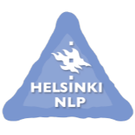

|
I am currently Doctoral Researcher in the Language Technology Research Group at University of Helsinki, supervised by Prof. Jörg Tiedemann, and co-advised by Dr. Shaoxiong Ji from Technical University of Darmstadt. I received my Master’s degree in Data Science from the University of Helsinki and my Bachelor's degree in Computer Science from Northeastern University, China. I am interested in Multilingual NLP, Large Language Model, and Machine Translation. My current research focuses on expanding the multilingual capabilities of LLM, especially in low-resource languages. |

|
Publications |
|
Zihao Li, Shaoxiong Ji, Hengyu Luo, Jörg Tiedemann Arxiv [Paper] / [Github] / [Models & Datasets] |
|
Hengyu Luo, Zihao Li, Joseph Attieh*, Sawal Devkota*, Ona de Gibert*, Shaoxiong Ji*, Peiqin Lin*, Bhavani Sai Praneeth Varma Mantina*, Ananda Sreenidhi*, Raúl Vázquez*, Mengjie Wang*, Samea Yusofi*, Jörg Tiedemann Arxiv [Paper] / [Github] |
|
Shaoxiong Ji, Zihao Li, Indraneil Paul, Jaakko Paavola, Peiqin Lin, Pinzhen Chen, Dayyán O'Brien, Hengyu Luo, Hinrich Schütze, Jörg Tiedemann, Barry Haddow Arxiv [Paper] / [Github] / [Model] / [Datasets] |
|
Zihao Li, Shaoxiong Ji*, Timothee Mickus*, Vincent Segonne, Jörg Tiedemann EMNLP 2024 [Paper] / [Github] |
Education |
|
University of Helsinki Master of Science - MS, Data Science2023 – 2025 |
|

|
Northeastern University (CN) Bachelor of Engineering - BE, Computer Science2019 – 2023 |
Experience |
|  |
Helsinki-NLP Research Assistant2024.7 – 2024.9 |
|
Électricité de France NLP Engineer Intern2024.4 – 2024.6 |
|
|
BMW Brilliance Automotive Product Intern2023.3 – 2023.6 |
|

|
Maxnet Inc. Software Engineer Intern2022.7 – 2022.8 |